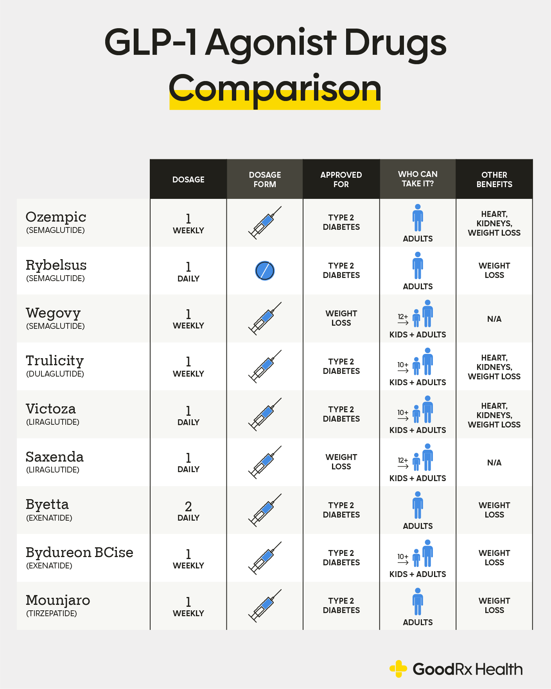

GLP-1 agonist drugs, such as Ozempic, are useful for managing glucose levels in Type 2 Diabetes patients. Ozempic aids with insulin release, blood sugar regulation, and decreasing appetite. Our team wants to increase knowledge of the benefits and side effects of Ozempic, so that people who are diagnosed with Diabetes can make informed decisions about their treatment.
On this page, you'll see information about Ozempic and semaglutide, its active ingredient.
Important Information
Popular GLP-1 Analysis
Three of the most popular GLP-1s on the market were analyzed based on their side effects and blood glucose reduction. Based on the differing properties of these three types of GLP-1s, one type may fit a patient's needs better over another.


Retatrutide

Agonist Drugs
